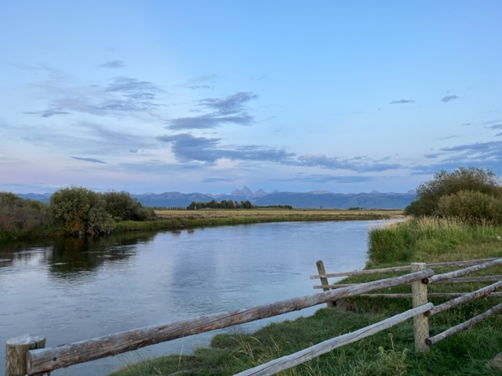

Access Map #1
As the teton starts in the headwaters in Victor Idaho down through the teton dam, there is many accesspoints that offer different parts of fishing. The first access point is Horseshoe Bridge which is a great easy flowing part of the teton.

Access Map #2
The next access before the narrows is the bridge right under highway-33.
After this point comes the old hydro electric plant which is a steep and difficult spot to access.

Access Map #3
The next access point is the 'Bitch Creek Conversion Point'.
This is where the teton and the creek combine into the fast flowing waters into the rapid section of the river.
From here you can float 6 miles downstream to the Spring Hollow Road takeout.
Access Map #4
There are a few miles of rapids that flow into the fallen Teton Dam.
This access point is paved with gravel and is a great beginner spot to try fishing.
Access Map #5
The Last and final take out is the Teton Bridge right above the small town of Newdale.
This is a great takeout for a short float from Teton Dam, which was the POI mentioned above.